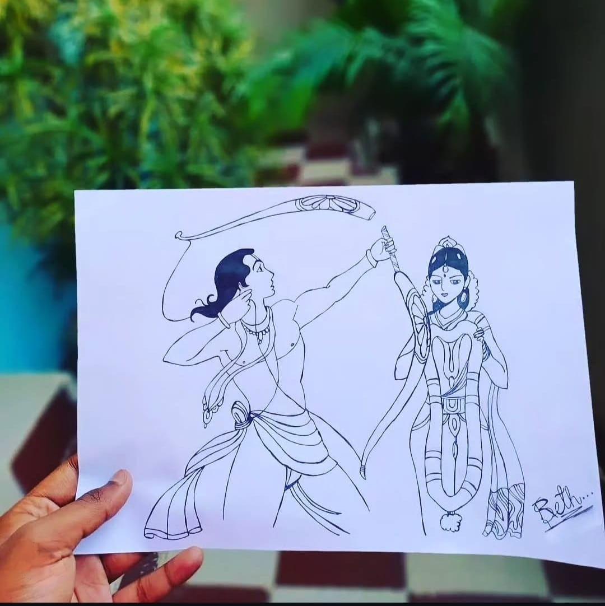

Ram Sita

Medium: Pen Art
Year: 2023
This Artwork Represents Ram Sita In A Detailed Pen Art Style,
The Ram Sita Artwork Gracefully Portrays Divine Love, Devotion, And Dharma, With Serene Expressions And Sacred
Harmony That Symbolize Faith, Sacrifice, And The Eternal Bond Of Righteousness And Compassion.